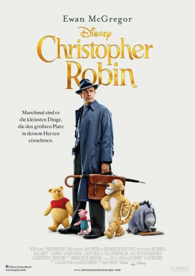

#10006 Christopher Robin
 gesehen am 05.12.2018
gesehen am 05.12.2018
 
 IMDB-Wertung: 7.5 / 10
IMDB-Wertung: 7.5 / 10  Tomatometer: 73
Tomatometer: 73  Metascore: 60
Metascore: 60 
Christopher Robin ist erwachsen geworden. Doch der Junge, der einst mit seinen tierischen Freunden zahllose Abenteuer im Hundertmorgenwald erlebte, führt kein glückliches Leben: Er steckt in einem schlecht bezahlten Job fest, mit dem er nicht glücklich ist und bei dem er zu viel arbeiten muss, und vernachlässigt darüber noch dazu seine...
Jahr: 2018
Dauer: 103 Minuten
FSK: 0
Land: USA Studio: Walt Disney Studios Motion PicturesTonspuren: DD5.1 - ,
Untertitel:
Auflösung: 1080p (1920x808) Größe: 5642 MB
Genre: Drama, Komödie, Abenteuer, Fantasy, Animation/Trick, Familie
Regisseur:  Marc Forster
Marc Forster
Drehbuch: Alex Ross Perry, Tom McCarthy, Allison Schroeder, Greg Brooker, Mark Steven Johnson
Soundtrack: Jon Brion, Geoff Zanelli
Darsteller:
 Ewan McGregor als Christopher Robin
Ewan McGregor als Christopher Robin Hayley Atwell als Evelyn Robin
Hayley Atwell als Evelyn Robin- Bronte Carmichael als Madeline Robin
 Mark Gatiss als Giles Winslow
Mark Gatiss als Giles Winslow Oliver Ford Davies als Old Man Winslow
Oliver Ford Davies als Old Man Winslow- Ronke Adekoluejo als Katherine Dane
 Adrian Scarborough als Hal Gallsworthy
Adrian Scarborough als Hal Gallsworthy Roger Ashton-Griffiths als Ralph Butterworth
Roger Ashton-Griffiths als Ralph Butterworth- Ken Nwosu als Paul Hastings
 John Dagleish als Matthew Leadbetter
John Dagleish als Matthew Leadbetter Amanda Lawrence als Joan MacMillan
Amanda Lawrence als Joan MacMillan- Tristan Sturrock als Christopher's Father
 Paul Chahidi als Cecil Hungerford
Paul Chahidi als Cecil Hungerford- Gareth Mason als Balloon Vendor
- Rainy Milo als Boy's Mother
 Michael Jenn als London Train Conductor
Michael Jenn als London Train Conductor- Souad Faress als Wealthy Woman
- Vera Chok als Margaret King (Train Passenger 1)
 Matt Berry als Policeman Bobby
Matt Berry als Policeman Bobby Simon Farnaby als Taxi Driver
Simon Farnaby als Taxi Driver Mackenzie Crook als Newspaper Seller
Mackenzie Crook als Newspaper Seller- Vivien Bridson als Old Man Winslow's Secretary
- Narinder Samra als Milkman
- Clara McGregor als Girl in Aircraft Design Office
- Raj Ghatak als Neel Chawla (Barrel Mover)
 Jim Cummings als Winnie the Pooh / Tigger
Jim Cummings als Winnie the Pooh / Tigger Brad Garrett als Eeyore
Brad Garrett als Eeyore Nick Mohammed als Piglet
Nick Mohammed als Piglet Peter Capaldi als Rabbit
Peter Capaldi als Rabbit Sophie Okonedo als Kanga
Sophie Okonedo als Kanga Toby Jones als Owl
Toby Jones als Owl Shola Adewusi als Rosemary Hopwood (uncredited)
Shola Adewusi als Rosemary Hopwood (uncredited)- Lucy Appleton als Girlfriend / Passerby (uncredited)
 Roy Beck als Winslow Board Director (uncredited)
Roy Beck als Winslow Board Director (uncredited) Gintare Beinoraviciute als Passerby (uncredited)
Gintare Beinoraviciute als Passerby (uncredited) Bern Collaço als Train Passenger / Man in swimwear (uncredited)
Bern Collaço als Train Passenger / Man in swimwear (uncredited)- Abbey Denne als Girlfriend (uncredited)
- David Gambier als WWII Soldier (uncredited)
 Caroline Garnell als Winslow Efficiency Room Worker (uncredited)
Caroline Garnell als Winslow Efficiency Room Worker (uncredited)- Connor Haywood als Lance Corporal (uncredited)
 Jeremy Oliver als Commuter (uncredited)
Jeremy Oliver als Commuter (uncredited)- Thomas Padden als Businessman (uncredited)
 Kumud Pant als Train Passenger (uncredited)
Kumud Pant als Train Passenger (uncredited)- Anthony Richard Rowe als Home Guard (uncredited)
- Richard M. Sherman als Singer (uncredited)
 Peter Singh als Ravi Patel (uncredited)
Peter Singh als Ravi Patel (uncredited)- Sharron Spice als Commuter (uncredited)
- Rupert Turnbull als Red-Haired Boy (uncredited)
- Rutvig Vaid als Station Porter (uncredited)
- Orton O'Brien als Young Christopher Robin
Datei: X:\2018(A-F)\Christopher Robin (2018, FSK0, 1920x808).mkv seit 20.11.2018
Festplatte: HD 2017(A-Z)-2018(A-F)
 Es gibt insgesamt 151 Filme in der Gruppe '2018(A-F)'
Es gibt insgesamt 151 Filme in der Gruppe '2018(A-F)'